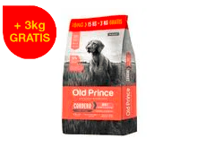

Old Prince
- Alimento para perro adulto
- $1800
¿Cuáles son los alimentos secos para perros? Los alimentos secos son los que tienen un porcentaje de humedad más bajo,llegando solo a un 3% o 15% a diferencia de los Alimentos Húmedos para perro que tienen un 60% o 85% de humedad.
¿Qué juguetes para gatos existen? Jugar y entretenerse es muy importante para tu mascota, por eso tenemos cañitas, varitas, peluches, pelotas, con Catnip y mucho más, para garantizarle todo lo que necesita a tu amigo gatuno.

¿Para qué sirve la cucha? La cucha sirve para proteger a nuestra mascota de las condiciones climáticas en exteriores y como lugar para descansar y dormir